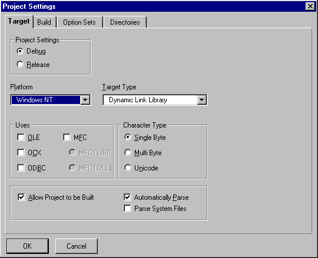
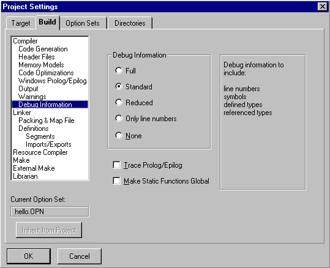
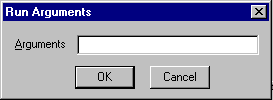
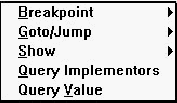
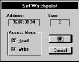

Home
| Search
| CTG
| RTL
| IDDE
| STL
Home
| Search
| CTG
| RTL
| IDDE
| STL
Last update Fri Apr 28 16:30:17 2006
|
Reference 1. Introducing Digital Mars C++ 2. Introducing the IDDE Part 2: Creating an Application with Digital Mars C++ 3. Starting a Project and Defining Workspaces 4. Generating an Application Framework 5. Defining Classes and Their Hierarchies 6. Editing Program Code 7. Adding Look and Feel with Resources 8. Testing an Application Part 3: Learning Digital Mars C++ by Example 9. Introduction to the Tutorial 10. Lesson 1: Create the DOS Application 11. Lesson 2: Generate an Application Framework 12. Lesson 3: Customize the Interface 13. Lesson 4: Add Messages with ClassExpress 14. Lesson 5: Add a Dialog Box with ClassExpress Part 4: More about Creating Programs 15. More about Projects and Workspaces 16. More about Project Build Settings 17. More about AppExpress 18. More about ClassExpress 19. Class Editor Reference 20. Hierarchy Editor Reference 21. Text Editor Reference 22. Using Version Control Part 5: More about Testing Programs 23. Controlling and Configuring the Debugger 24. Commands Available in Debugging Mode Part 6: About Managing Resources 25. ResourceStudio Resource Editor 26. Dialog Editor 27. Menu, Accelerator and String Table Editors 28. Bitmap, Cursor, Icon, and Font Editors 29. Version Information and Custom Resource Editors Part 7: Appendixes A. Expression Evaluation B. IDDE Settings and Command-Line Options C. Using NetBuild |
8. Testing an ApplicationThis chapter provides an overview of building, running, and debugging an application in Digital Mars C++. Whenever you finish making any significant addition or change to the source files of an application, it is wise to test the result and verify that you have achieved your goals. To do so, you must first build (or rebuild) the executable so that it incorporates your modifications. Then you must observe its behavior— either by tracing through modified sections, or at least by running the application under the control of the debugger.This entire phase of the development cycle can be carried out in the IDDE. Because all debugging in Digital Mars C++ takes place within the IDDE, you do not have to leave the IDDE and run a separate debugger. The IDDE itself provides a wealth of tools for examining all facets of your application's structure and behavior. Two other chapters present detailed information about the debugging capabilities of Digital Mars C++. Controlling and Configuring the Debugger describes the commands you use when debugging, and the options available in the IDDE for configuring the debugging environment. Commands Available in Debugging Mode, describes the commands available in each of the debugging windows. Debugger HighlightsThe integrated debugger:
Choosing an Environment for DebuggingThere are three versions of the IDDE included with Digital Mars C++. An icon for each version you install is available in your Digital Mars C++ program group. These different versions of the IDDE are essentially identical, except that they allow you to debug different kinds of executables:
Building a ProjectTo test an application, you must first build the executable file, which is the file you test. Your project specifies the source and library files needed to build the executable, as well as options that control the build process. Windows executables also incorporate such resources as menus, dialog boxes, icons, and bitmaps; these are defined in resource files. The building process begins by compiling the source files into object files. Object files are then linked with library files to create the executable file.Selecting the project typeYou must specify the type of executable you plan to build. You do so by choosing Settings from the Project menu and clicking on the Target tab to select the Target page, as shown in Figure 8-1. [Figure 8-1 Target page of the Project Settings dialog box] On this page, choose the operating system your target executable will run on, and the target type. Not all target types are available with all operating system types. The Target page also presents the option of building a Debug or Release version of the executable. If you want to debug your executable, select the Debug option. For more information on the Target page of the Project Settings dialog box refer to More about Projects and Workspaces. Setting compiler and linker options for debuggingWhen you indicate that a debugging version should be built, the IDDE sets the appropriate compiler and linker options, and also prevents debugging information already in object files from being discarded.To verify that the these settings are appropriate, choose Settings from the Project menu, and then click on the Build tab to select the Build page of the Project Settings dialog box. Select the Debug Information subpage by clicking on that label in the left listbox. The Debug Information subpage is shown in Figure 8-2.  [Figure 8-2 Debug Information options] For more information about project, compiler, and linker options, see More about Projects and Workspaces. Building executable filesThe IDDE provides three ways to build executable files from your project: by performing a standard build, by rebuilding the entire project, or by linking the existing object files.Performing a standard buildThis is the most common of the three build options. To begin, choose Build from the Project menu. The IDDE recompiles only those files that changed since you last compiled them, then links the project. The IDDE displays any errors in the Output window.The IDDE Make facility is used by default to determine the steps needed to build your project. It is functionally identical to the DOS command-line Make utility SMAKE, included with Digital Mars C++. If you need to use a different, DOS command-line Make utility, such as NMAKE or PolyMake, you can do so; see More about Project Build Settings, for details on how to use an external Make program. Rebuilding the projectIf you want to recompile every file in your project— even those files that are up-to-date— choose Rebuild All from the Project menu. The IDDE recompiles all files in your project, whether they've been edited recently or not, then links the project.Typical situations in which you use the Rebuild All command include:
Linking the projectIf you want to build a program with the existing object files but without recompiling your source files, choose Link from the Project menu. The IDDE links the object files.Typical situations in which you use the Link command include:
Other project optionsThe Build page of the Project Settings dialog box offers additional settings that you may find useful for precompiling headers and generating an assembly listing.Precompiling headersThe Header Files subpage lets you precompile one or all of the header files that are included by source files in your project. Precompiling a header is useful when the header file changes infrequently or not at all between builds, or when a header file is included by most of the source files in a project. Precompiled headers speed up the build process, especially with large header files. For example, windows. h can be beneficially precompiled because it is large and is not likely to change.Generating an assembly listingThe Assembly Listing (.COD) check box on the Output subpage lets you create a .cod file that contains the assembly language code into which the compiler converts your source code. In this file, C++ source statements are preserved as assembly language comments. Each commented statement precedes the assembly language code to which it corresponds.Running a ProjectYou can run the application that your project produces without leaving the IDDE. Commands that run your application ask you to build it if required.If your program requires no command-line arguments, choose Execute Program from the Project menu. The IDDE launches your application. If your program requires arguments, first choose Arguments from the Project menu. The IDDE displays the dialog box in Figure 8-3.  [Figure 8-3 Run Arguments dialog box] Enter your arguments -- not the program name -- in the dialog box. For example, entering: *.* /slaunches your program with the arguments *.* and /s. After specifying the arguments, click OK. Then run your application as described above. Quick Start: Debugging an ApplicationThis section provides a brief description of how to perform common debugging tasks. You can find a complete presentation of the debugging capabilities of Digital Mars C++ in Controlling and Configuring the Debugger, and in Commands Available in Debugging Mode. In Chapter 23, see especially the sections "Commands on the Debug Menu" and "Debug Toolbox Icons."After building your project, you can enter debugging mode by choosing Start/Restart Debugging (F4) from the Debug menu. (That is, you may either choose this command from the menu, or type its keyboard shortcut given in parentheses.) Alternatively, you can click on the Restart Debugging icon in the Debug toolbox. Any open Source windows change to debugging mode. Your application executes to the breakpoint set automatically on WinMain (for Windows applications) or main (for DOS applications and 32-bit console applications). Other debugging windows, such as the Function window and Data/ Object window, can be opened as needed from the Views toolbox or from the Goto View submenu of the IDDE's Window menu. In debugging mode, the Start/Restart Debugging command on the Debug menu remains available. This command restarts the program. The Stop Debugging command on the Debug menu exits debugging mode, and returns the IDDE to editing mode. Stepping through codeTo step to the next source code statement, choose Step Into (F8) from the Debug menu. Alternatively, you may click on the Step Into icon in the Debug toolbox. If the current line is a function call, and debugging information is available for that function, you will trace into that function. To step over a function call, choose Step Over (F10) from the Debug menu, or click on the Step Over icon in the Debug toolbox.Note: If you accidentally step into a function call when you meant to step over it, you can move to where you intended to be— the statement following the call— by choosing Return from Call from the Debug menu. This command executes to the current function's return address (unless a breakpoint or watchpoint is encountered before control reaches that point). Setting and clearing breakpointsSetting a breakpoint on a source code statement causes your program to stop when execution reaches that statement. The debugger regains control, and you may again perform any debugging mode actions.To set a breakpoint on a statement, first click on that statement in the Source window to make it the selected line. Then choose Set/Clear Breakpoint (F9) from the Source window pop-up menu (which appears when you click the right mouse button in the Source window), or click on the Toggle Breakpoint icon in the Debug toolbox. These commands act as toggles; repeating them clears the breakpoint. The Source window pop-up menu, as it appears in debugging mode, is shown in Figure 8-4.  [Figure 8-4 Source window pop-up menu in debugging mode] A breakpoint symbol in the left margin of the Source window indicates a breakpoint on the adjacent line. You can also clear a breakpoint by dragging the symbol out of the Source window. Executing up to a statementTo execute up to the currently selected line, choose Go Until Line from the Source window pop-up menu. Double-clicking on any line in the Source window causes your program to run until execution reaches that line.Viewing a list of functionsThe Function window lists the functions in the current module or in all modules. Toggle the display by choosing Current Module or All Modules from the View menu. Double-click on any function to view that function in a Source window.You can easily set a breakpoint at the beginning of a function from within the Function window by choosing the Set/Clear Breakpoint (F9) command from the Bpt menu. Examining the values of variablesThe Data/Object window lets you view either global data or the variables local to a function. The Show menu of the Function window has commands Global Data and Local Data that select the type of data displayed in the Data/Object window. If you choose Local Data, the Data/Object window shows the local variables for the function currently selected in the Function window, provided that function is in the call chain. (If a function is not in the call chain, it has no local data.) The display can also be toggled by choosing Local/Global Data from the View menu of the Data/Object window.Examining the call chainThe Call window displays the stack of function calls in your code that have not yet returned. The list is presented in reverse chronological order from most to least recent; thus, WinMain (or main) is at the bottom of the list.The Call window's Show menu contains commands that let you zoom in on a particular function in the chain. For example:
Setting watchpointsA watchpoint specifies that execution of your program should stop when a particular variable or memory location is written to or read from. This capability is essential for detecting problems arising from wild pointers, for example, which can manifest themselves in extremely elusive and seemingly random behavior.Digital Mars C++ debuggers are designed to take advantage of hardware watchpoints provided by 386 and higher microprocessors. The Digital Mars C++ installation program may install the file SCWDEBUG. 386 in the [386Enh] section of system. ini if your system needs it to allow the use of hardware watchpoints. Because watchpoints are implemented with hardware assistance, using this powerful tool imposes no speed penalty on program execution. Setting a watchpoint on a variableUsing the methods described in the sections above, make sure that the desired variable is displayed in the Data/Object window. Click on the line referencing the variable to select it; the line should be highlighted. Choose Set Watchpoint (Ctrl+ W) from the Watch menu of the Data/Object window. This opens the Set Watchpoint dialog box, shown in Figure 8-5. [Figure 8-5 Set Watchpoint dialog box] The debugger maintains information about the type of variables and their location in memory. The selected variable's type determines the size of the watchpoint. The Set Watchpoint dialog box displays the address and size of the watchpoint as noneditable fields, and provides options for breaking on a Read access, Write access, or both. To clear the watchpoint, choose Clear Watchpoint from the Watch menu of the Data/Object window. Warning Exercise caution when setting a watchpoint on an automatic variable (that is, a local, nonstatic variable). If you attempt to set such a watchpoint, the debugger warns you by displaying a message on the status line. You should clear the watchpoint by the time the function whose local variable you are watching returns. If you don't, Windows itself can use the stack location subsequently, thus triggering the watchpoint and causing Windows to crash. In addition to setting watchpoints on variables, watchpoints can also be set on locations in memory using the Memory window, whose Watch menu is identical to that of the Data/Object window. Letting your program run until the next breakpointYou can make your program run until execution reaches a breakpoint by choosing Go until Breakpoint (F5) from the IDDE's Debug menu, or by clicking on the Go until Breakpoint icon in the Debug toolbox. You can use the Breakpoint window to see at a glance where breakpoints have been set.Letting your program run until it terminatesYou can make your program run until it terminates -- ignoring any breakpoints -- by choosing Go until End from the Debug menu.Interrupting execution of the debugged applicationUse the Ctrl+Alt+SysRq key combination to break execution of the application being debugged and return control to the debugger. It may be necessary to press this key combination a few times before the debugger regains control. (If you use this key combination to break execution when control is within Windows itself, it may be difficult for the debugger to step out of Windows code.)The technique is most useful when you suspect that your own code is hung. Returning to the debugger lets you examine your program's state, which may be one that you thought impossible. Inspecting the values of variables and the call chain can suggest how to identify and eliminate the source of the error.
Note:
Use Ctrl+Alt+F11 to break execution of Win32s
applications.
|